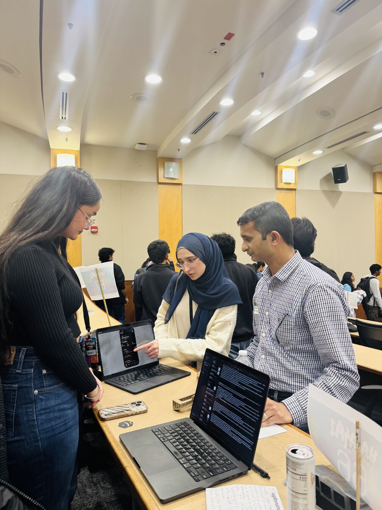
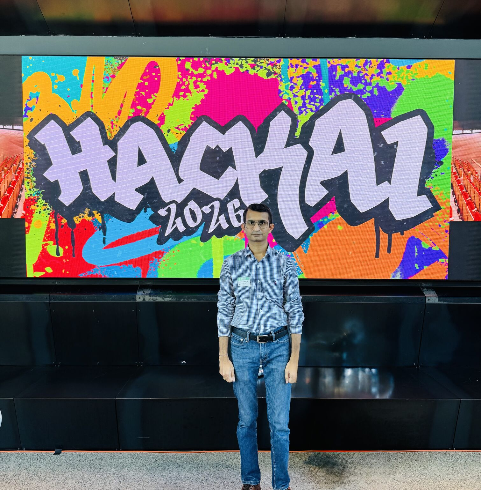

Sandip Patel
AI Architecture Leader
Designing Trusted AI Systems for the Enterprise
I'm a senior AI and cloud architecture expert with more than two decades of experience designing and deploying secure, enterprise-grade digital platforms. My work centers on building governed, trustworthy, and scalable agentic AI systems that enable responsible AI adoption in regulated and mission-critical environments.
In my current role at Microsoft, I advise global organizations on AI-driven modernization, secure cloud architectures, and large-scale AI platform adoption. My contributions span agent orchestration, AI governance, enterprise observability, and cloud-native system design, with measurable outcomes across multiple industries.
I support customers across financial services, energy/utilities, legal, aviation, and manufacturing—aligning technical solutions to compliance and resilience requirements.
Global Advisory
Enterprise-scale solution leadership across industries
Zero-Trust AI
Secure architectures with compliance-ready controls
Governed Platforms
Audit-ready AI with lifecycle governance
Scalable Systems
Production reliability and observability at scale
Core Areas of Focus
Specialized in enterprise AI architecture with deep expertise in security, governance, and scalable platforms.
Secure Agentic AI Architectures
Multi-agent orchestration, tool access controls, policy enforcement, and human-in-the-loop safeguards for enterprise deployments.
AI Governance & Responsible AI
Lifecycle governance, auditability, evaluation pipelines, compliance-ready controls, and model risk management.
Enterprise AI Observability
Telemetry, drift monitoring, hallucination detection, and production reliability patterns for AI systems at scale.
AI for Regulated Industries
Trusted AI systems for high-compliance sectors where security, safety, and auditability are mandatory requirements.
Cloud-Native AI Modernization
Secure architecture patterns, cost optimization strategies, and resilient modernization with Azure-native services.
Applied Architecture Frameworks
Reference architectures and maturity models that help organizations operationalize AI adoption at enterprise scale.
Thought Leadership & Research
Selected writing on secure agentic AI, AI governance, enterprise platforms, and cloud modernization.
Secure Agentic AI at Enterprise Scale
Patterns for building trustworthy multi-agent systems with robust security boundaries and governance controls.
IEEE (preprint)AMM: AI Modernization & Maturity Framework
A structured approach to guide organizations from AI pilots to scalable, governed production platforms.
arXiv (preprint)Governed Retrieval for Regulated Document Workflows
Reference architecture for retrieval with policy enforcement, redaction, evaluation, and evidence capture.
IEEE / Industry White PaperObservability Patterns for Production LLM Applications
Practical approaches to drift detection, hallucination monitoring, and operational reliability for AI systems.
Technical PublicationTalks & Presentations
Invited talks, technical sessions, and knowledge-sharing engagements across public and private forums.
Secure Agentic AI for Regulated Enterprises
Security boundaries, policy enforcement, and human-in-the-loop controls for production AI agents.
AI Governance & Auditability in Production
Model lifecycle governance, evaluation pipelines, and compliance reporting for enterprise AI.
Operationalizing AI Observability
Drift detection, telemetry patterns, and incident response practices for AI systems.
Cloud-Native Modernization for AI Platforms
Scalable patterns, cost optimization, and secure deployment practices with Azure.
Reference Architectures & Frameworks
Architecture themes and frameworks developed for enterprise AI adoption and modernization.
Secure Agent Orchestration Blueprint
Patterns for tool safety, authorization, data boundaries, and audit trails for multi-agent systems in regulated environments.
Governed RAG for Document Workflows
Reference architecture for retrieval with policy enforcement, redaction, evaluation, and evidence capture for compliance.
Enterprise AI Observability Pack
Telemetry, drift monitoring, hallucination detection, and incident response practices for production AI reliability.
AI Modernization & Maturity Framework
A structured approach to guide organizations from pilots to scalable, governed AI platforms with clear milestones.
Awards & Achievements
Select recognitions and professional acknowledgments for technical leadership and impact.
Driving Excellence Award
Recognition for enabling secure AI adoption in regulated environments with governance and observability patterns.
Customer Impact Recognition
Acknowledged for architecture leadership accelerating modernization programs while reducing security and compliance risk.
Technical Leadership Award
Recognized for enterprise guidance improving AI reliability, operational readiness, and cost efficiency.
Professional Experience
Nearly two decades of expertise in AI, cloud architecture, and enterprise digital transformation.
Microsoft
Sep 2023 – Sep 2024Senior Cloud Solution Architect – Data, AI & App Innovation
Dallas-Fort Worth Metroplex
- Built and launched 15+ AI-powered applications using Azure AI Foundry, Azure OpenAI, and Semantic Kernel—helping customers cut manual work by 50% and save over $2M annually
- Guided 20+ companies through app modernization to Azure Kubernetes Service, Azure Functions, and Container Apps—slashing infrastructure costs by 40% and tripling scalability
- Led technical sales conversations with executives, delivering hands-on demos and deep-dive architecture sessions that generated over $5M in Azure revenue
- Integrated AI into PostgreSQL databases for retail, healthcare, and legal clients—boosting customer engagement by 45%
- Helped 50+ development teams accelerate with GitHub Copilot—cutting development time by 60% and improving code quality by 35%
Microsoft
Apr 2021 – Sep 2023Digital Cloud Solution Architect – Azure Infrastructure
Plano, Texas
- Designed and executed cloud migration plans for 30+ SMBs, moving 500+ VMs and 200+ applications to Azure with 99.9% uptime—saving $3M+ annually
- Built secure Azure networks using VNets, NSGs, ExpressRoute, and Azure Firewall—reducing security incidents by 85% and achieving SOC2, HIPAA, PCI-DSS compliance
- Ran 100+ technical workshops and POC sessions contributing to $8M+ in Azure sales with 90% win rate
- Helped 25+ customers optimize Azure spending through reserved instances and right-sizing—cutting bills by 35% ($500K+ savings)
Infosys Limited
Oct 2012 – Apr 2021Technology Architect
Plano, Texas
- Led Toyota North America's digital transformation—architected a cloud-based supply chain platform for 1,500+ users, cutting parts ordering time by 40%
- Built the DevOps practice from scratch with Azure DevOps and Terraform—reduced deployment time from 3 weeks to 2 hours (98% faster)
- Created centralized Infrastructure-as-Code repository managing 200+ Azure resources across 15 development teams
- Designed disaster recovery solution with 99.95% availability and 4-hour recovery targets—zero data loss across 8 tests
- Migrated legacy mainframe applications to Azure, eliminating $2M+ in annual licensing costs while doubling performance
- Managed team of 12 developers and 3 QA engineers, introducing Agile practices that boosted sprint velocity by 45%
Cybage Software Pvt. Ltd.
Aug 2010 – Oct 2012Software Engineer
Pune, India
- Delivered technical designs for 15+ enterprise applications using ASP.NET, C#, and SQL Server
- Wrote clean, quality code—delivered 20+ features on time with zero critical bugs in production
- Created comprehensive test plans catching 95% of issues before production
3i Infotech Ltd.
Dec 2009 – Jul 2010Software Engineer
Mumbai, India
- Partnered with business analysts on 10+ financial applications—improving requirements accuracy by 40%
- Built scalable data processing apps handling 100K+ records daily with 99.9% accuracy
Dynamic Web Technologies (Intelgain)
Mar 2008 – Oct 2009Programmer Analyst
Mumbai, India
- Worked with 20+ clients on application requirements—earned 95% satisfaction ratings
- Developed complex e-commerce and CMS applications serving 50K+ daily users
- Maintained 12+ web applications, improving stability by 60%
Soigné Technologies Pvt. Ltd.
Oct 2006 – Mar 2008Software Engineer
Mumbai, India
- Wrote maintainable code following best practices—90%+ code review approval rate
- Optimized performance making pages load 35% faster
- Achieved 90% first-contact resolution rate on customer technical issues
Judge & Reviewer
Contributing to the AI and technology community through evaluation and selection of innovative work.


HackAI 2026 – UT Dallas
AI Society at UT Dallas (AIS UTD)
Honored to serve as a Judge at HackAI, evaluating innovative AI solutions developed by talented student teams addressing real-world challenges. The depth of technical execution, architectural thinking, and originality demonstrated across projects—ranging from applied generative AI to scalable cloud-native designs—was truly impressive.
Participating as a judge reflects a broader commitment to advancing artificial intelligence, mentoring emerging technologists, and contributing expert judgment to initiatives that recognize excellence and innovation. These platforms play a critical role in shaping the next generation of AI leaders and practitioners.
March 2026Technovation Girls
Judge for Technovation Girls, a global program empowering young women to solve real-world problems through technology and AI. Evaluating innovative mobile apps and AI solutions created by students addressing community challenges.
2026AI Innovation Awards
Judge for enterprise AI innovation competitions, evaluating solutions for technical excellence, business impact, and responsible AI practices.
2024 – PresentTechnical Paper Reviews
Technical reviewer for the 2026 IEEE International Conference on Emerging Trends in Information, Communication & Systems and the 4th International Conference on Artificial Intelligence, Machine Learning and Cybersecurity. Providing expert feedback on research submissions in AI architecture, cloud security, and emerging technologies.
2026Mentorship & Community
Committed to developing the next generation of AI architects and technology leaders.
Technical Mentorship
One-on-one mentoring for aspiring architects and engineers, focusing on AI architecture, cloud platforms, and career development.
University Outreach
Guest lectures and workshops at universities on AI architecture, responsible AI, and enterprise technology career paths.
Community Programs
Active contributor to tech community programs supporting underrepresented groups in entering AI and cloud architecture careers.
Let's Connect
For speaking engagements, publications, collaborations, and professional inquiries.